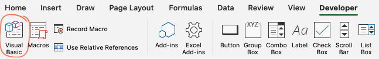
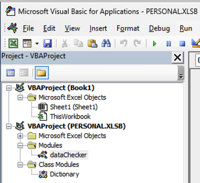

Adding the Macro to your Personal Workbook
First - locate the VBA files
The macro files are downloaded with the package. Copy and run the following code chunk in R to open the folder containing the files.
macroFile <- "dataChecker.bas"
file_path <- system.file("extdata", macroFile, package = "importExcel")
# Get the directory path containing the file
folder_path <- dirname(file_path)
# Check if the folder exists
if (dir.exists(folder_path)) {
# Open the folder using the default system file explorer
# For Windows
if (Sys.info()['sysname'] == "Windows") {
shell.exec(folder_path)
}
# For macOS
else if (Sys.info()['sysname'] == "Darwin") {
system(paste("open", shQuote(folder_path)))
}
# For Linux
else if (Sys.info()['sysname'] == "Linux") {
system(paste("xdg-open", shQuote(folder_path)))
}
# If the OS is not recognized
else {
message("Unable to open folder: Unrecognized operating system")
}
} else {
message("Folder not found")
}Now, in Excel
Click Visual Basic from the Developer Tab (If you can’t see this, click the Developer Tab) 
Click on VBAproject(Personal.XLSB)

- Click File > Import File
- Import the Dictionary.cls file
- Import the dataChecker.bas file
- Click Save to save the macros to Personal.XLSB